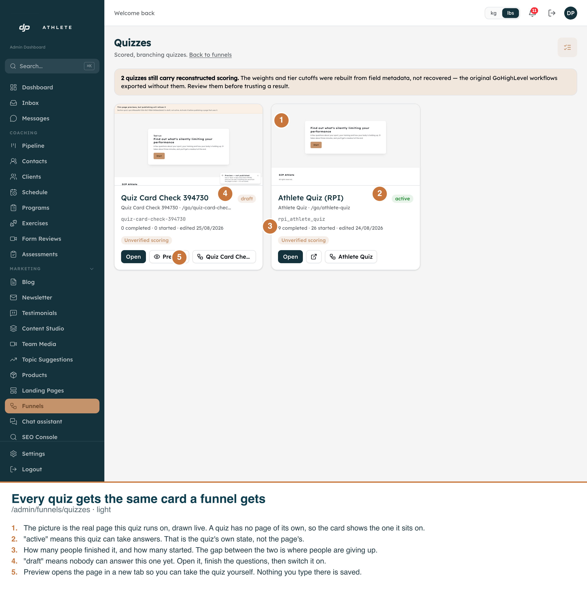
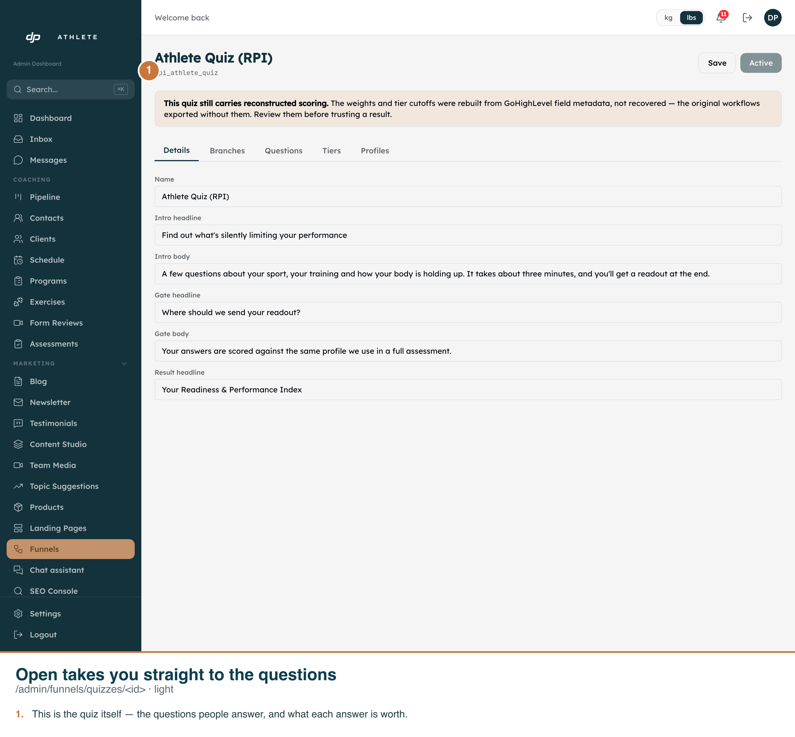
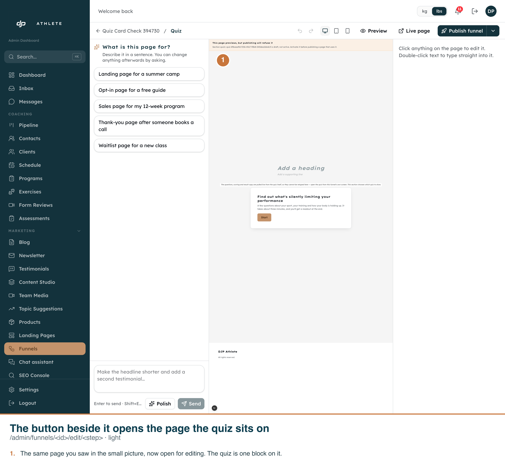

Every frame is the real app on its real route, driven by
scripts/capture-quizzes-as-cards.ts. The callouts are burned into each PNG.
Measured on the dev copy (anjvztjiokcgiyhobknq), asserted in the DOM before each shot:
page.locator("table").count() === 0, and two
[data-testid="quiz-card"] elements present. Checked first, because a table with
rounded corners photographs like a card at thumbnail size./go/athlete-quiz?preview=1; the quiz created during the run sits on an unpublished page and frames
/preview/quiz-card-check-394730. Both read out of the iframe's src.active on the seeded quiz,
draft on the new one — whose funnel is also a draft, so only a correct implementation
distinguishes them.Open reaches the question editor;
the button beside it reaches the page builder for the step the quiz sits on. Neither landed on a 404.Two things these shots show that are NOT this change:
createQuizFrom copies
seed_marker from whatever it clones, and the default source is the reconstructed
blueprint. Pre-existing, and arguably right — a clone of unverified weights is still unverified.Not photographed: a quiz on no page (the No preview yet state) and the failed-read state. Both are covered by unit tests; producing either on screen would have meant writing to the database rather than using the product.

/admin/funnels/quizzes. Two real quizzes in the two real states: active on a live page,
draft on an unpublished one. The thumbnails are live same-origin renders of the funnel pages, not
screenshots — the same mechanism the funnels board uses.
Open goes to the quiz editor rather than to the page,
because the questions are what needs your words — the page around them is already written.
adminStepHref from the funnel's kind, so a landing page goes to
/admin/pages/… rather than to a funnel screen that would redirect straight back to the list.